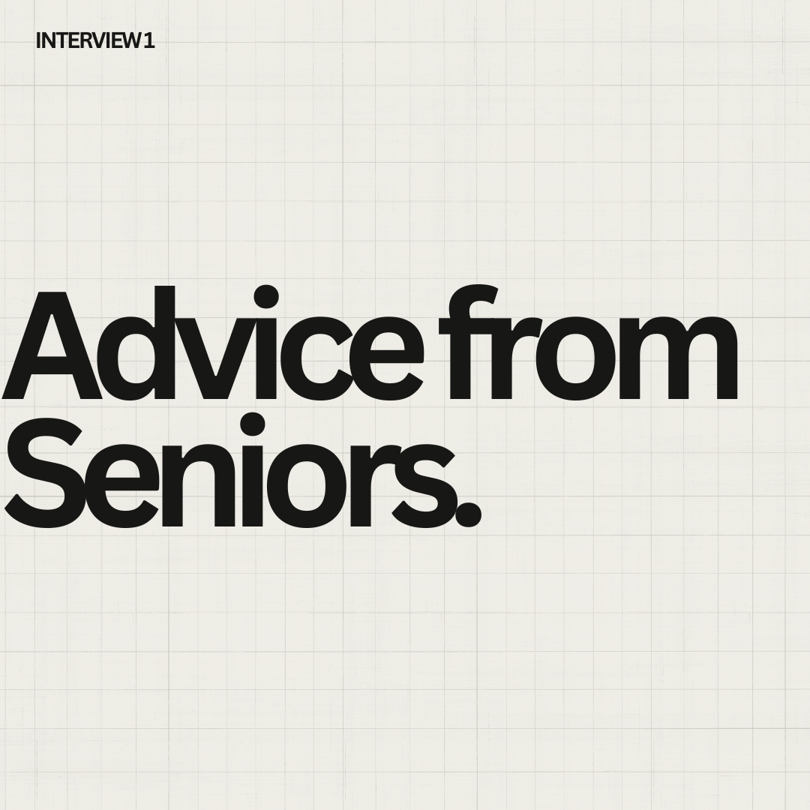

Advice from Seniors

Are you considering pursuing a career in medicine but unsure where to start?
We asked high school seniors from the GTA already on the path to medical and healthcare careers to share their best advice for younger students! Whether you’re exploring course selections, extracurriculars, or seeking motivation, their insights help guide you. Feel free to reach out to them with any follow-up questions!
Yashmita Sharma - White Oaks Secondary School
Be different. Thousands of people are applying to the same program, each with the same skill set and exceptional academic achievements. Why should the admissions officer offer you admission over any other student? Is it your passion for a unique hobby? Involvement in research projects? An initiative you began? Grades matter, but they aren’t enough to ensure admission into the program of your dreams.
After applying to many health sciences, life sciences, and biochemistry programs across Ontario, I've realized that they prioritize well-rounded students over those with only academic prowess. Every supplementary application evaluates your quick thinking, problem-solving, and character. Developing such skills is possible only in educational settings but isn't very easy. Volunteering, pursuing passions, and exploring a variety of fields are essential to find out what you excel in within the vast medical field and that will set you apart.
Emma Zhang - White Oaks Secondary School IB Program
Do your research ahead of time! Find the programs that you are most interested in and know their requirements/prerequisites. I would highly recommend asking people who are currently in the program for advice to see if you would enjoy the school environment and classes. Also make sure to also do any supplementary applications as soon as possible! Don’t wait until the last minute to complete them!
Preesha Grewal - White Oaks Secondary School
If you get a bad mark you can always come back from it if you have a positive attitude. Ask your teachers for help, talk to them about what went wrong and how you can improve this helped me get better grades! Know what you want to do and plan accordingly (taking courses needed or that will be in university). Make friends that have the same goal for university so you can motivate each other and make life slightly easier.
Elise Jung - White Oaks Secondary School
Don’t slack off during grades 9-11. Try to build a strong foundation for studying and don’t be scared to try new learning strategies! You never know what paths might be available for you in the future that might require your past grades, so be diligent.
Anoushka Mosale - White Oaks Secondary School
Try to set a study routine in grades 9-10! Don’t be afraid to experiment, and pursue your interests! WOSS has many great clubs for that! Try different techniques (like past papers, flash cards, etc) and figure out what works for you! Honestly, researching more about your field of interest in the first two years of highschool, and having even an initial goal to work towards really does help keep you motivated and hard-working! Be sure to ask for help as well! That’s what your teachers are there for!
Reina Xue - White Oaks Secondary School IB Program
Pursuing medicine is a long journey, so building strong habits early is key. Throughout high school, try breaking down large tasks into smaller, more manageable steps – this can apply to both academics and extracurriculars. It is also important to find the right strategy that works best for you personally since certain study techniques may not be suitable for everyone. When applying to health science programs, research the school you are applying to and start writing the supplementary applications as early as you can. It is important to show your passion through these essays! Reflect on your personal journey with healthcare and express your motivations clearly in the application!
Aarush Behal - White Oaks Secondary School IB Program
A key principle that I think you should incorporate in your life is CONSISTENCY. Starting from grade 9, the habits that you will create there will follow you through your high school journey and act as a stepping stone to your post-secondary approach. Personally, developing such habits allowed for a more structured approach that kept me focused on my own goals.
As you must know, medicine in itself is a rigorous and intensive field of study, at times seeming even impossible. However, it’s important to remember that countless individuals have navigated this path before you, and many will continue to follow after you. What sets those who succeed apart is not just intelligence or ambition but their consistent behaviour.
I understand that developing such habits is easier said than done, especially with the rudimentary preparation from elementary school. For me, I learned to develop them through active reading, my personal favourite being James Clear’s Atomic Habits. By implementing his habits I was able to notice a shift in my organizational skills that allowed me to incorporate more of my hobbies and try new things even with the IB rigor. While not only preventing burn out, it also helps for university applications, giving you new and unique experiences to talk about that differentiate you from other candidates.
‘Just Keep Swimming’ ~ small and steady steps forward are better than stagnant leaps. Stay persistent, and success will follow!
Nethra Gopal - White Oaks Secondary School IB Program
Make sure this is something you want! Don’t do it just for the money or the prestige because it's too much work for all that (and too expensive). I’m not saying to go in thinking you just “want to help people!!” because that’s also not enough. I'm saying, make sure that medicine and the human body truly interests you, and it's something you want to study and keep learning about for the rest of your life. Can you handle a lot of heavy memorization? Can you handle competition? Are you scientifically minded? Can you keep going, even when you’re tired?
Also, senioritis is real, burnout is real (trust me). Take breaks!! Try not to feel guilty about it. Don’t skip out on too much fun stuff just because you have some work to do (but like, in moderation, don’t blame me if you get no work done). Keep your ambitions in mind. You have a goal, and it’s not going to magically fall into your hands, sadly. Make a Pinterest board or something, remember the vision!!!
Inaaya Hussain - White Oaks Secondary School IB Program
Over the course of your highschool career try to spend more time with your friends and family. I know I hyper focused on my studies for the first two years (of course I don’t regret establishing good working habits and a strong base in my studies), however, I did believe I was missing out on the “highschool” experience. My advice is to build a good balance in your life! To enjoy your time with others which can in turn improve your mood while studying. Participate in events, go out, take breaks and just enjoy yourself with friends!
Highschool has a way to become incredibly negative especially when everyone around you is going through the same struggles, however, it is incredibly important to keep a positive outlook. What helped me the most is understanding the benefits that would come of the effort I put in! I am also a victim of extreme burnout and at one point you’ll learn that it’s okay to just get any work in rather than giving nothing. Nothing has to be perfect the first time around, like if you’re tired and don’t want to study simply doing one set of flashcards is more than doing nothing at all! Take these small steps back into being the best you are and achieve your goals.
Also my favorite advice that made me realize I have free will is: You don’t need to start your work at the perfect time like 7:00 or 6:30, you can start your work at 6:37 just START!